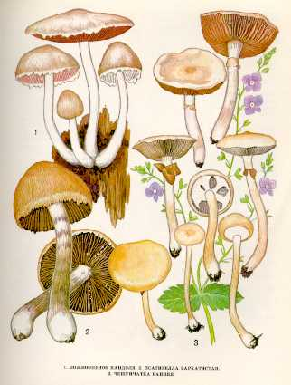

1. ЛОЖНООПЕНОК
КАНДОЛЯ.
Этот гриб встречается часто, с весны до осени. Растет большими группами на земле, на трухлявых пнях, на сухой и обработанной древесине лиственных пород.
Шляпка до
Пластинки сначала серовато-розоватые или серовато-фиолетовые, позднее темно-коричневые. Споровый порошок пурпурово-бурый.
Ножка 7-
Гриб съедобен. Употребляется
вареным.
2. ПСАТИРЕЛЛА БАРХАТИСТАЯ.
Растет в различных лесах на почве и трухлявых
пнях, чаще на старых, заброшенных дорогах, с августа по октябрь.
Шляпка 6—15 см в диаметре, колокольчатая, желто-глинистая,
волокнистая, с белыми свисающими хлопьями по краю. Мякоть тонкая, светлая, пале-
вая, очень ломкая, с приятным запахом
и вкусом.
Пластинки приросшие к ножке, бурые, широкие, темно-коричневые с
фиолетовым оттенком, с белыми краями. Споровый порошок фиолетово-бурый. Споры эллипсоидные,
неравнобокие, бородавчатые.
Ножка 5—12 см длины, 0,4—
Малоизвестный условно съедобный гриб. Употребляется свежим.
3. ЧЕШУЙЧАТКА РАННЯЯ.
Селится на перегнойной почве в огородах, парках
и лесах. Появляется ранней весной с наступлением теплых дней и растет до глубокой
осени одиночно и небольшими группами. Встречается довольно редко.
Шляпка до
Пластинки приросшие к ножке или слабонисходящие
по ней, сначала беловатые, затем рыжеватые, по краю белые. Споровый
порошок коричневый. Споры удлиненно-овальные,
гладкие.
Ножка до
Малоизвестный условно съедобный гриб, вкусовые качества средние.
Употребляется свежим, маринованным.